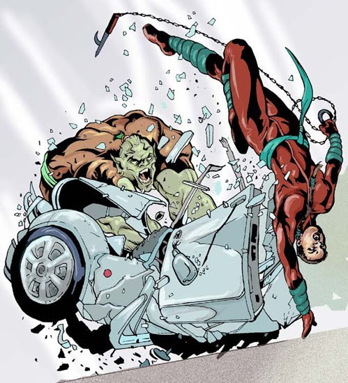

GAMEMASTERINGOne player--the Gamemaster or "GM"--takes responsibility for running a game. The Gamemaster creates the adventure, runs the players through it, takes on the roles of the various other characters the heroes encounter, and handles any questions about the rules as they arise. The Gamemaster also adjudicates the process of character creation, deciding what traits, modifiers, and so forth are appropriate for the particular game, along with the best way to express certain concepts in game terms. While Gamemastering is a big responsibility, it's not as hard as it might seem, and providing a fun and entertaining game for your friends can be quite rewarding. This page was made for the Gamemaster. Players are not required to read this page but are also not forbidden from reading it. RUNNING THE GAMEWhile the players are responsible for keeping track of their characters and deciding on their actions, the Gamemaster is responsible for everything else that happens in the game. A good GM tries to make sure the game runs as smoothly as possible and is enjoyable for all of the players. Many components go into creating a good game. The following sections give you the basics, but experience is the best tool to help you become a better Gamemaster. ASSIGNING DIFFICULTIESThis game can be broken down into a series of tasks the heroes must perform, from piecing together clues about a villain's latest scheme to blasting said villain through a wall and disarming his doomsday device in the nick of time. It's up to the Gamemaster to assign the difficulty of these and numerous other tasks in the game and to determine the outcome of the heroes' efforts. This section offers some general guidelines on assigning the difficulty of a task. AVERAGE DCA good guideline to keep in mind is the chance of an average character (with a modifier of 0) succeeding at an average task (DC 0) is just about 63% (see Statistics). So any time you have to have an average character do something, or want to set a difficulty you feel is average for a particular character, aim for around that chance of success. If you want to know what bonus is required to have a 63% chance of succeeding at a particular task, it is equal to the DC. So a DC 15 action (a formidable task) requires a bonus of +15 in order to have a 63% chance of success (on a roll of 0 or higher). This chance of success on a task is why a character is allowed to automatically roll a 0 as a routine check (see Routine Checks), because the average character only really fails at an average task when hurried or under stress. CIRCUMSTANCE MODIFIERSCircumstance modifiers (see their description in The Basics) are one of the GM's best tools. Rather than having to memorize a lengthy list of special-case modifiers, just keep this guideline in mind: if the situation is in the character's favor, that's good for a +1 bonus on a check (or -1 if the favor is against). Or if the situation is heavily in the character's favor, that's good for a +2 bonus on a check. If it's strongly against the character, that's a -2 penalty. It's that simple. While 1 and 2 don't sound like much it is effectively doubling the character's ability (see Ranks & Measures). Keep in mind that the dice used have a maximum sum of +3 and the system emphasises character ability rather than luck and circumstances. TABLE: DIFFICULTY CLASS EXAMPLES
ROUTINE CHECKSRoutine checks reflect that some tasks and situations are so trivial it is not worth having a player roll a check. It would be illogical for the character to have a real chance of failing at the task, since failure should be rare enough to constitute a complication in that situation. Examples include things like a competent driver handling a car under ordinary conditions or a trained professional performing the routine tasks of a job. Routine checks save time, because you do not need to ask players for a check for every single thing their characters do, but they also provide valuable guidelines for when you should ask the players for a check while running the game. They set a threshold for the Difficulty of certain actions. When coming up with Difficulty Classes for your adventure, keep the routine check rule in mind. If the DC is low enough that anyone can succeed as a routine check, then it may be too low, or the action may not be worth assigning a check. Take Perception, for example. If you decide it is a DC 0 Perception check to pick up on some clue or bit of information in the adventure, that Difficulty is low enough that anyone with an unimpaired (0 or higher) Awareness can succeed at the task as a routine check. Assuming the information is also important to the plot, you might be better off to simply tell the players their characters notice it without calling for a check. If there needs to be a chance of failure, then set a higher Difficulty for the check. Of course, If the situation is stressful--such as the midst of combat--then a routine check is not an option, and a lower DC can provide heroes with a reasonably high chance of success with just a small chance of failure for dramatic purposes. SECRET CHECKSSometimes it's a good idea to make checks secretly, so the players don't necessarily know the result. This is usually the case for any sort of check where the characters don't immediately know whether they've succeeded or failed. For example, Perception checks usually should be made secretly. If the check succeeds, the character notices something. If it fails, then the player doesn't know whether it's because the character failed to notice something or there wasn't anything there to notice in the first place. The same is true for checks involving powers like Mind Reading or Precognition, and certain interaction checks, since the player doesn't necessarily know the target's initial attitude or exactly how much it has improved. One easy way of making secret checks is to make a list of random 3dF rolls in advance. When there's a need for a secret check during the game, mark off one of the rolls from your list and use that for the check result. ALTERING THE OUTCOME OF DICE ROLLSOn occasion the outcome of a particular dice roll may seriously impact the game. For example, the heroes are walking into a trap and none of them make the necessary check to notice the danger in time. Or a hero gets in a lucky shot and the villain rolls a critical failure on his Toughness check, resulting in a quick defeat. What do you do? In some cases, you can just go with the outcome the dice give you. If none of the heroes spot the trap, have it go off. Odds are the heroes only end up captured and will have the opportunity to escape and thwart the villain later in the adventure anyway. Even if the results of the dice roll are unexpected, so long as they don't spoil the fun of the adventure, feel free to go with them. Unexpected twists and turns are part of the fun of an RPG, not only for the players, but also for you when you run the game. On the other hand, some dice rolls result in anticlimactic or just plain dumb outcomes. In these cases, feel free to change things to make the outcome more interesting or more in line with how the game should go. In the above example, you might decide the villain is only dazed or stunned rather than being knocked out, momentarily giving the heroes the upper hand, but not ending the climactic encounter prematurely. Isn't this cheating? Well, yes, in a manner of speaking it is, but it's "cheating" in order to make the game more interesting and fun for everyone involved. So long as you don't alter the outcome of dice rolls unfairly or maliciously and you do it to help ensure the game is fun, interesting, and challenging, you shouldn't have a problem. Besides, the complication system of the game provides you with the perfect excuse to "cheat" to help out the heroes' adversaries from time to time, and to compensate the players in the process by awarding them Victory points, which they, in turn, can use to "cheat" the fickle dice from time to time and ensure their heroes succeed. "TELL ME HOW IT HAPPENS..."
While the game rules provide general outcomes for character actions, in terms of relative success or failure, what the rules do not provide is the "flavor" of those actions, the descriptions and visuals of exactly how they happen. Those details are left up to you and your players to devise as part of your story. Therefore a good habit to get into as a Gamemaster is asking your players to not only tell you the outcomes of their dice rolls and tests, but to embellish and describe them in as much detail as they wish. For example, you inform a player: "You hit your foe hard enough to daze him." Follow it up with: "What happens?" The player might say, "I follow a couple quick jabs with a powerful uppercut that sends him stumbling back against the railing of the catwalk, then I press my advantage, so we're both struggling up against it, high above the factory floor." Alternately, the player might say, "He stumbles back a few steps and I take the opportunity to draw a concealed bolo from my utility belt, which I'm going to use to tie him up next round." Same game system outcome, very different descriptions. Likewise, encourage players to embellish on their heroes' failures; part of the fun of the game is for the heroes to deal with setbacks and challenges, and the players will often provide you with ideas in their descriptions. Maybe a hero's near miss damages some part of the scenery, or endangers innocent bystanders. Perhaps a failed skill check shakes the hero's confidence and brings up dramatic unresolved issues (a prime roleplaying opportunity). Get your players involved in telling you how things happen for their heroes and you further involve them in the story and world of the game. FAKING ITSometimes you'll run into a situation the game rules don't cover, or that you're not sure how to handle. In these cases, feel free to just fake it. Come up with a check you feel suits the situation and go with it, so you can keep the game moving rather than getting bogged down in rules arguments. One of the great things about the system is pretty much everything can be resolved with a simple check. So when all else fails, just have a player make a check with the most appropriate trait (ability, skill, or power). If the check beats your estimation of the difficulty Class, it's a success. Otherwise, it's a failure. You also can fake it when dealing with certain trivial situations in the game. If there's an important piece of information you want the players to know, don't bother seeing if they succeed at a Perception check. You can pretend to make the checks, then ignore the results and tell the players what their heroes find. Likewise, if a power level 10 hero is going to take out a PL 3 thug, you don't have to make all the rolls. Just ask the player to describe how the hero defeats the hapless thug. It's pretty much going to happen anyway, and there's no reason why the hero shouldn't look cool doing it. Use estimations to streamline the game when needed. For example when you or a player need to roll 3 times you might instead roll once, shift the result a little closer to 0 and use that for each situation. Power Stunts point totals may take a while to calculate exactly so instead you may estimate the number of ranks for quick access. Or if you want the players to notice a character following them instead of having them roll every round you can roll dice to determine how long it takes for them to notice. THE ESSENTIALS OF THE GAMEThe essence of the this game system is actually quite simple. The vast majority of the rules expand upon the core mechanics of the system, providing special-case rules or situational modifiers. So long as you understand the essentials of the game, you can handle just about any situation that comes up. Those interested in playing in a looser and more casual style should focus on these fundamentals and not worry about the special-case rules or more detailed guidelines. If you come up with an unexpected situation, just choose an appropriate type of check, a Difficulty Class, and make a roll to see if the character succeeds or not! It's that simple. RANKEvery trait in this game --abilities, skills, powers, and so forth--has an associated rank, a value telling you how strong (or weak) that trait is. Ranks run from -5 (very weak) to 3 (peak of human achievement) or more. You can rate virtually any trait by its rank. With the use of the table of ranks and measurements, you can rate virtually anything--distance, weight, time, and so forth--by rank. Keep in mind that every rank up doubles in effectiveness, such as getting +1 strength doubles the amount of weight the character can carry. This is why a +1 or +2 circumstance bonus is a big deal. Doubling effectiveness means that rolling a +2 on a strength check means quadruple that character's average strength. Admittedly rolling a +3 to lift 8 times the average amount is hard to believe for an average human, but this is overlooked so that critical rolls exist. DIFFICULTY CLASSEvery task--from making an attack to avoiding harm to figuring out a gadget--has a Difficulty Class or DC, a value that tells you how hard that task is to perform. DCs generally range from -10 (automatic, so easy it's not worth rolling) to 30 (nearly impossible). CHECKSActions are all resolved through checks, a roll of 3 fudge dice, plus a modifier. If the total of the check equals or exceeds the Difficulty Class, the action is a success. If it doesn't, then it's a failure. CONDITION MODIFIERSVery highly beneficial conditions apply a +1 bonus on the check, very highly adverse conditions impose a -1 penalty. This is true whether you're trying to use a skill, make an attack, use a power, or anything else. DEFENSE CHECKSAvoiding an effect is a defense check, with a Difficulty Class equal to the user's check result. A successful defense check means you avoid the effect, a failed check means you suffer some (or all) of the effect. THAT'S IT!That's the core of the game: roll 3dF + rank and modifiers vs. a Difficulty Class. If you understand that, you can do pretty much anything in the game. The rest is just detail. When in doubt, or whenever you want to speed the game along, just have a player make a check of the appropriate trait rank against a DC based on how difficult the task is and you can't really go wrong. OPTIONAL RULESProvided is a list of optional rules that you as a Gamemaster can use in place of the original rules. No Critical Rolls: if you don't like the idea of rolling a +3 for 8 times effectiveness or just don't like the idea of automatic failure then use this option. Simply put: rolls are never considered critical even on the result of +/- 3 such rolls (although good) are not treated special. Short Power Stunt Duration: the default length a power stunt lasts is until the end of a scene or until the duration ends. This option requires power stunts to either have concentration duration or to end after a single turn. The reason for using this option is that it encourages the team of players to build more useful and diverse characters instead of heavy use of power stunts and thus this rule should be announced before any characters are built. This rule may be useful for a gritty setting so that characters will face more challenges and have a greater understanding of what is at stake. The reason not to use this option is that it is strict and may feel unfair for a more light-hearted easygoing campaign. MAINTAINING GAME BALANCEPart of the Gamemaster's job is to make sure the game is fair and balanced, so everyone can have a good time and all the heroes have an equal chance of doing some fun and exciting things in the course of the adventure. It can be tricky sometimes, but this game gives you tools for balancing the traits of the heroes against different challenges and handling problems that may come up. RULES ISSUES & HOUSE RULESWhile this game presents a fairly complete and balanced game system for superhero roleplaying, no one game system is perfectly suited to every gaming group's needs and tastes, and this one is no exception. Sooner or later, issues may arise over particular rules and how they are applied in your game. In some cases, it may be an unexpected situation not covered by the existing rules, requiring you to extrapolate and come up with a ruling. In other situations, a particular rule may be problematic, making the game less fun because it doesn't suit your personal tastes or style of play. In all situations, remember: If a rule doesn't suit your gaming group, then by all means, change it! A corollary of this is: The Gamemaster overrules the rules. That is, if you decide to make up a particular "house rule" about how something works in your game, or to interpret something from the Hero's Handbook (this website) in a particular way, then that's the way it works in your game. Players should be respectful of the Gamemaster's job to set up and regulate the rules of the game for everyone's enjoyment. Any disputes should be discussed with an eye toward finding a solution everyone finds satisfactory, rather than trying to stick to the exact letter of the "rules as written." The spirit of any game is to have fun. As long as you focus on that, you can't be far off. UNBALANCED HEROESThe power level guidelines built into the rules help ensure characters of the same power level are at least in the same ballpark in terms of overall effectiveness. Still, there may be times when a particular combination of abilities and effects makes a character too powerful compared to the other heroes or to the villains in your series. When this happens, talk to the player and ask him or her to change the character's traits to something more balanced and better suited to the series. If necessary, explain that the character makes things less fun for everyone as-is and changing the character will make the game better for everyone. Suggest some possible changes to make the character balance out better. SAYING NO TO YOUR PLAYERSA big part of maintaining game balance is the ability to say "no" to your players, setting guidelines for characters and sticking to them. Some of those guidelines are already in place: the limits imposed by power level. They help ensure players can't just put all their Character points into a single overwhelming combat trait (like a +50 attack bonus, or something similar). Even with those limits in place, however, there may be times when a player comes up with a character concept or trait that just isn't suited for the game and can be unbalancing. For example, it can be hard to run mysteries around a hero with a lot of ranks of Mind Reading. If you plan to have mystery stories, you may want to consider limiting Mind Reading, Postcognition, and similar effects, or finding innovative ways for villains to get around them. If you're running a four-color game where going for the kill is rare and a player wants to run a blood-thirsty vigilante hero, you may just have to say no and ask the player to come up with another idea. Note that the GM has the authority to say "no" to a particular power effect or other trait, even if it is perfectly "legal" in terms of the game rules and the power level of the series. It's virtually impossible to present a "one-size-fits-all" system of game balancing characters as diverse as comic book heroes without heavily limiting potential concepts, so the game goes the route of presenting a wide range of available power effects (omitting some real game-breakers). The GM can--and should--choose to limit others on a case-by-case basis, as best suits the needs of the game. Having standards for your series and sticking to them can save you a lot of trouble in the long run by heading off problems before they happen. SAYING YES TO YOUR PLAYERSMany roleplaying games (even this one) spend a lot of space telling you how to say "no" to your players: how to tell them a power they want is unbalanced, how to tell them the character they have in mind doesn't fit into the group, and so forth. Some might get the idea that it's the Gamemaster's job just to say "no" and frustrate the players. Nothing could be further from the truth! True, sometimes you must be firm and say "no" to something for the betterment of the game and to safeguard everyone's enjoyment, but a Gamemaster who also learns to say "yes" to the players can ensure everyone has fun. Players are a cunning lot, so it's a virtual certainty that, sooner or later, they will come up with something for their heroes to do that's not covered in the rules. It may be a particularly innovative maneuver, a new use for a skill or power, using the environment to their advantage in some way, or something you never would have considered before. When this happens, take a moment and ask yourself: "Would it be fun if what the player is proposing happened?" A good way to think about it is, if you saw something similar in a comic book or a superhero cartoon or movie, would it be good? If the answer is "yes" then you probably should let the player at least try it. Gamemasters have three major tools to help them say "yes" to their players: Modifiers: Remember the GM's rule of thumb: if something greatly aids or makes a task easier for a character, it's worth a +1 bonus. If it makes the task much harder or noticeably hinders the character, it's worth a -1 penalty. This allows you to assign modifiers for almost any situation on the fly, without having to look things up and slow down the game while puzzling out all the pluses and minuses. Extra Effort: When players want their characters to pull off something outlandish, rather than saying "no" let them try but make them pay for it by counting it as extra effort (see Extra Effort). Extra effort already allows players to pull off all kinds of stunts, so there's no reason you can't expand the list. This works particularly well with innovative uses of powers. Since extra effort allows a character to perform power stunts, it can cover a lot of ground. Victory points: Like extra effort, Victory points allow characters to pull off amazing stunts. If a player wants to do something that isn't normally a part of the character's abilities, require a Victory point to make the attempt. The Victory point doesn't do anything but let the character try something outlandish, and players won't be able to pull off such stunts all the time because they have a limited number of Victory points to spend. Still, it allows for those amazing, one-of-a-kind stunts that happen in the comic books. MAKING MISTAKESEven Gamemasters are only human. Sooner or later, you'll make a mistake, whether it's forgetting a particular rule or overlooking something about a character or an element of the story. Don't worry, it happens, and it doesn't mean your game is ruined! The best way to handle a mistake is to own up to it. Tell your players you screwed up and need to make a change in order to keep the game fair, and fun. For example, if you allow a new power into the game and it turns out it's way more powerful and useful than you thought, and it's ruining everyone else's fun, that's a problem. Tell your players you made a mistake letting that power into the game in the first place and you have to change the way it works in order to make the game fun and fair for everyone. Be reasonable and straightforward in handling your mistakes and your players are much more likely to be cooperative and understanding about them when they (inevitably) happen. LOST IN TRANSLATIONSome staples of the comic books, while enjoyable in the stories themselves, don't always translate well to the medium of roleplaying games. You might want to take these "translation issues" into account when planning your adventures. For example a character who is virtually unstoppable in a TV show may be fun to watch but not fun to play as. Or there may be a power that could easily be abused but is conveniently forgotten about most of the time in the story. DEFEAT AND CAPTUREHeroes in the comics are frequently defeated early on in a story. The typical structure is: the heroes encounter the villain, suffer a defeat or reversal, and then come back from defeat to overcome the villain. In longer stories there may be several reversals: the villain beats the heroes and escapes, then beats the heroes and puts them in a death-trap, which they must escape to make their final confrontation with the bad guy. This game encourages this kind of narrative structure by awarding Victory points for defeats, capture, and similar complications suffered by the heroes. Essentially, the more the heroes struggle early on in the game, the more resources (in this case, Victory points) they have to overcome the villain later . Defeat in the comics isn't a serious problem, since it usually just results in the heroes facing another obstacle, like a deathtrap, rather than ending the story. Some players, however, don't care for the idea of defeat, even when there is some kind of reward for it. This may come from other RPGs, where defeat has much more serious consequences, up to and including the death of the heroes! It can also come from associating any kind of defeat or set-back with "losing the game." These players may overreact to potential defeats in the game. The best way of handling this is to discuss it with your players. Point out that an early defeat by the villain is not necessarily a "loss," but a complication, and that they earn Victory points for complications, leading up to the point where they can use their earned points against the villain. If this doesn't address the issue, you may need to give the heroes complications other than defeats, at least at first. When you do have the heroes defeated as a complication, make sure the players all know that there is no chance for their heroes to avoid this once you spring it on them, to minimize the opportunity for them to struggle and rail hopelessly against it. ESCAPING VILLAINSOften, in the comics, the villain gets away. Usually it is during the initial encounters of a story: the heroes run into the villain, who escapes for the next encounter. In the comic books, it's easy for a writer to engineer the villain's escape. In a game, you may have to contend with players unwilling to let the villain go, so long as there's any chance of snatching victory from the jaws of defeat. These players will try anything and everything before they give up, which can cause problems for the story and spoil the game for others. The main ways of dealing with this issue are: providing the villain with an effective escape plan, and proper application of Victory point awards, when those plans go into effect. GUEST HEROESComic books sometimes have "guest stars" in them and some guest heroes are more popular than the main characters! In an RPG, however, the "guest stars" means "non-player characters run by the GM," so it's not a good idea to let them dominate the action. This just makes the players feel upstaged and superfluous. That's not to say you can't have guest heroes show up in your adventures. The trick is to make sure they don't upstage the heroes. The only exception is when you want the players to dislike the "guests" as much as possible! For example, if you have a story wherein mind-controlled heroes try to upstage the player characters, then go right ahead and have the NPCs steal their thunder. You can be sure the players won't like them one bit! The rest of the time, it's best if guest heroes play supporting roles. Have them be the ones defeated and captured by the villains, for example, and allow the player characters to rescue them (also dealing with the issue of captures, previously). Have NPCs come to the heroes for aid or advice. Retiring heroes can pass the torch to a younger generation, while younger, less experienced heroes can look to the player characters for inspiration and guidance. Another option is to allow the players to run the guest stars instead of, or in addition to, their regular characters. As long as you're not upstaging the players, it's not okay to allow them to upstage their own characters! For example, you can allow the players to run members of another hero team, meeting their regular characters as NPCs, or you can have two teams band together, mixing and matching characters from each and having each player run a regular hero and a guest hero. This can be a great way to include various heroes as guest characters in your games. LETHALITYComics have different levels of lethality and character death. It's important to make the expectations of your series clear to the players, just so there's no misunderstanding. A hero who refuses to kill under any circumstances might be an interesting oddity in a dark and gritty series full of militaristic super-agents, but a cold-blooded vigilante in a four-color world of merciful, law-abiding heroes can quickly become a problem (especially when the heroes feel honor-bound to see their "teammate" answer for his crimes). So it's best to be sure everyone is on the same page to avoid unnecessary disagreements. To reduce lethality you might require all players to have the complication Won't Kill or that all damage is non-lethal. To increase lethality you might have losing 6 HP from a single attack result in immediate death. Although heroes still gain the benefit of Victory points to help them avoid this fate. LONER HEROESAnother common element in the comics is the loner character: dressed in black, often trained in stealth, and preferring to work alone. That's all well and good in a solo story, but difficult to include in a team of superheroes. You can get away with a loner who is a reluctant team member in-character with players who understand and play along with the bit. Far worse is a team of loners, none of whom get along! You can accommodate some loner characters by giving them opportunities to show off their skills and requiring a minimum level of cooperation and willingness to work within the team. You're better off discouraging entire groups of loners right from the beginning, since odds are they won't work together for very long. ADDITIONAL TRAITS FOR NPCSThere are some traits that are designed for NPCs and are not intended for PCs. By default PCs are forbidden from having them (directly or by use of Variable). The Gamemaster can allow PCs to buy these but should be very careful in doing so since these traits tend to ruin challenge and story lines. EXTRA ADVANTAGESNPCs are able to take more ranks of the advantage Benefit: Wealth. Rank 4: trillionaire or owner of a large wealthy nation, Rank 5: owner of a successful corporation recognized across the galaxy or the owner of space resources (eg planets) or the owner of an inhabited but poor planet, Rank 6: owner of a wealthy planet or a powerful galaxy-wide organization, Rank 7: owner of the most powerful empire in the universe. GODHOODThere is an additional trait called Transcendence. Players and NPCs both have it but the players don't need to know about it since the Godhood powers and advantages should only be used by NPCs. See Godhood page for more details. CREATING ADVENTURESCreating a game is a fairly simple process. First, define the threat around which the adventure revolves. Then sketch out the overall plot, and describe the encounters the heroes are likely to have during the adventure. You'll also want to make sure you have statistics and character sheets for important supporting characters and villains. Present the players with the start of the adventure and you're off and running. Will things go exactly the way you planned? Probably not, but that's part of the fun and challenge of being a Gamemaster! BEFORE YOU BEGINThere are a number of things to consider when you begin planning an adventure, including the plot threads from previous adventures, complications, and the themes and events of past adventures. FABULOUS FIRST ISSUESIf this is your first adventure, you need to consider a few things, including how to get the heroes together as a team. They may already be a team when the adventure begins--especially if your players are using established heroes--or circumstances in the adventure might bring them together. The key things for a first adventure are to introduce the players to the setting and the major supporting characters. So the first adventure should be typical of the sort of adventures you plan to run. Give the players a feel for how things work in the world so they can get into character and into the setting. So, for example, if you're running a four-color game where character death is a rarity, it's probably not a good idea to make the first villain a murderous madman who kills with impunity. Likewise, if you're aiming for a gritty paramilitary style game, you probably don't want your first adventure to be filled with wacky humor and Silver Age puns. If this is your first adventure, you should also decide if the heroes are already together as a team or if they will have the opportunity to form a team during the adventure. Both approaches have their good points. Starting things with the team already assembled allows you to skip some exposition and get right into the action. It also avoids the problem of the heroes not getting together, which can happen. Allowing the players to roleplay the formation of the team, on the other hand, can be fun, and lets the players better define the nature of their team. WHEN LAST WE LEFT OUR HEROES...If the adventure is not the first in your series, then the first thing to do is look over your last few adventures. Are there any dangling plot threads left over from those stories, ones the players might be interested in following? Sometimes these dangling threads are placed deliberately, to give the players things to wonder about and look forward to in future adventures. In other cases, they crop up because certain things just didn't get resolved in a previous adventure, and players might be wondering when (and if) they will be. As a general rule, try and leave a few plot threads open at any given time. They don't always have to be the same ones. You can wrap up certain plots while opening up new ones to keep the series moving and maintain player interest. In fact, it's best if you occasionally tie up existing plot threads before starting new ones, providing some closure and keeping things from getting stale. A CHANGE OF PACEWhen you start creating an adventure, look over your notes from your last few adventures (if you've had a last few). Take a look at any trends in the adventures' threats, villains, and so forth and decide if you need a change of pace. Running the same sort of adventure time after time can make your game predictable and dull. Sometimes you need to shake things up a bit and give the players something new to sink their teeth into. Have your last few adventures all been crime-fighting? How about sending the heroes to another planet or dimension for an adventure or two? After a few adventures of fighting off an alien invasion, give the heroes a vacation on a tropical island where there's a sinister cult, or to a mountain ski lodge menaced by a yeti. Try an adventure where the heroes are in their secret identities the whole time, or without their powers. Maybe an accident causes the heroes minds to switch bodies, or gives them different powers. The possibilities are endless. Just make sure your "change of pace" adventures are really a change of pace and not just random wackiness (unless that's what your game is all about). DEFINING THE THREATAdventures usually focus on a particular threat or challenge. It might be anything from an alien invasion to a supervillain looking to conquer the world to something as simple as the heroes cracking down on a crime wave in the city or attending a parade in their honor. When the threat presents itself, the heroes must figure out how to overcome it. Supervillains' schemes are the forces that drive a series, since the main job of superheroes is stopping the villains from getting their way. Without these evil plots, there would be very little for heroes to do, apart from deal with petty crimes and natural disasters. So choosing a scheme is typically one of the first steps in creating a successful game. If you need further ideas for possible threats, look no further than your local comic shop (or your own back-issue boxes) filled with inspirational comic books. You also can get ideas from television, movies, and even the news and major world events. OUTLINING THE PLOTOnce you have an idea for a threat in mind, give some thought to how it will manifest. Outline a series of events that will take place. This gives you the overall plot of your adventure, a sort of roadmap you can follow while you're running the game to know what is likely to happen next. For example, you decide the threat in your adventure involves the crew of an alien ship stranded on Earth. Unable to speak any Earth languages and mistrustful of humans, the aliens need to acquire some advanced technology to repair their ship. They begin to track down and steal the things they need, using their own advanced technology and alien powers to overcome security and the conventional authorities. After they've made four thefts, they make the repairs to their ship and leave for home, smugly satisfied that humanity was no match for them. Now, that's what would happen if the heroes weren't around. Odds are the players aren't going to just allow the aliens to get away with their crimes. Perhaps the heroes are called in after the first robbery to begin an investigation, or maybe they are called in during the first robbery, giving them a chance to encounter the aliens and learn something about them (and probably fight them). The heroes can then begin investigating, trying to piece together who the aliens are, what they want, and what they'll do next. They might figure things out and set a trap at one of the potential targets. They might try to track the aliens back to their hidden ship, or capture one of them for interrogation. The aliens may come back for a captured crewmember, and so forth. Exactly how things end up depends on what the players choose to do. Try to focus your plot on the actions of the antagonists, letting the heroes react to things as they happen. It's hard to base the plot on what the heroes will do because you don't always know what that is. By focusing on the villains' actions, you give the heroes the freedom to do whatever they want in response, and you can then change the villains' plans accordingly. ENCOUNTERS

Your plot outline gives you a number of potential encounters the heroes may have during the adventure. An encounter is a single challenge, interaction, or activity, such as a fight with the villain, the investigation of a crime scene, a chase through the city, and so forth. Using your outline, you can get a good idea of the possible encounters during your adventure. In the previous example, the heroes may have encounters with the aliens at any of their four robbery sites. They also may investigate those sites and encounter the aliens at the crash site of their ship. Outline the possible encounters and take note of the important details in each one. For example, if the heroes encounter the aliens during one of their robberies, you'll want to know where the robbery takes place, what the place looks like, what time of day it is, and if anything in the environment could affect the outcome of the encounter. If the aliens steal radioactive isotopes from a nuclear power plant, a fight might risk damaging the reactor, causing a meltdown (a possible complication). That's a different encounter than if the aliens steal parts from a high-tech robotics factory, where the fight could involve a robot assembly line (which offers the characters big, heavy things to chuck at each other). The typical arrangement of encounters in the classic comic book story is: the heroes are alerted to the threat. They take action, but suffer a setback. They try to deal with the threat, facing various challenges along the way. Eventually, they overcome these challenges, face the threat directly, and overcome it. The difficulty and number of challenges in the middle determines how long the story is, from a single quick game session to an entire series (with each challenge in the middle being an entire adventure of its own). The early encounters serve a few purposes. First, they introduce the players to the threat and allow them to find out more about it. If it's a new villain, for example, the heroes learn the villain's name, powers, agenda, and so forth. If it's an existing villain, they find out the villain's current plan (and perhaps how the villain escaped from prison or survived certain death from a previous story). If it's a disaster, they see the first signs and get expert advice on what's likely to happen, and so forth. Initial encounters also provide opportunities for the heroes to earn Victory points. This means the early encounters in the adventure don't have to go well for the heroes. In fact, it's better for them in the long run if they don't go well. The more setbacks the heroes face early on, the more Victory points they earn for use later in the adventure. In the classic comics story, the heroes encounter the threat and suffer a defeat of some sort. The villain may get away, their powers may prove inadequate to deal with the problem, their plan may not work, and so forth. The heroes then regroup, come up with a new plan, and try again. Of course, not every encounter has to end in defeat for the heroes, otherwise the players may get frustrated. Keep in mind you can also put the heroes up against minions and minor challenges for them to overcome on the way to the big finale. You can award Victory points for complications, too, to give the players a sense of accomplishment along the way so their problems don't seem quite as bad. THE GRAND FINALEThen there's the big finish to the adventure, the grand finale. This is when the heroes confront the major threat of the adventure and have a real chance to deal with it. It may be a final showdown with the big villain, stopping the villain's plans at the last moment, averting disaster, or confronting an alien invasion fleet on the edge of space. Whatever the case, it's when events in the adventure come to a climax and it's time for the heroes to step up and save the day. The finale is the big payoff of the adventure, what the players have been working towards, so you need to make it as exciting and fun as possible. That means the finale should be challenging; encouraging the players to spend all those Victory points they've racked up during the adventure (remember, they can't save them and spend them later!). On the other hand, the finale shouldn't be so tough the heroes can't win, or the adventure just ends in frustration. It's best if things end in a decisive win for the heroes, although sometimes their victory may be a pyrrhic one. THE WRAP-UPThe wrap-up or epilogue is where you finish up anything after the climax of the adventure. It's where the heroes haul the villains off to jail, find out any remaining information, resolve the adventure's mysteries, and so forth. There may still be some dangling threads left over at the end of the adventure (see When Last We Left Our Heroes..., previously) but generally things should be tied up and resolved by the end. You can play out the wrap-up, allowing the players to describe what their heroes are doing, or just sum things up for them. For example, "After you capture Fallout and shut down the runaway reactor, the authorities move in to take the supervillain into custody and repair the damage to the nuclear plant. The city is safe once again." AWARDSWhile adventure and action might be a hero's sole reward, RPG players prefer something a bit more tangible they can use to "keep score." Even if there are no winners or losers in an RPG per se, there are still ways to reward good game play and provide players with encouragement to keep on playing your game. AWARDING VICTORY POINTSPart of the Gamemaster's job is handing out Victory points to the players, which influences the flow of the adventure and helps the heroes accomplish important tasks later on. Essentially, you decide how easy or difficult a time the heroes have by how many Victory points you hand out, and by how many complications you make them face to earn those points. The key difference is the players decide when and how they spend their Victory points. So you're not necessarily handing them an easy win, you're just giving them resources they can use to potentially overcome challenges in the adventure. As GM, you have discretionary power over Victory points. How often opportunities to earn Victory points crop up is up to you. Giving out more encourages players to spend them and makes for a more action-oriented and heroic game. Handing out fewer Victory points encourages players to save them until they really need them, most likely for the climactic encounter of the adventure. A good guideline for awarding Victory points is at least one Victory point per scene in the adventure leading up to the final scene. For more difficult adventures, you can award more Victory points by bringing more complications into play. You should usually try to give the heroes' complications "equal time" in the adventure (or, if not in that one adventure, over the course of two or three adventures) so they have the same "earning potential" in terms of Victory points. AWARDING CHARACTER POINTSThe Gamemaster awards heroes Character points over the course of a series. This represents the experience and confidence the heroes have gained, along with other factors contributing to an increase in their abilities, skills, and powers. Generally, heroes each receive 1 Character point for a successfully completed adventure, lasting for one game session. If the heroes overcame especially powerful foes or difficult challenges, the GM can increase the Character point award to 2 points. For adventures lasting more than one game session, the heroes should get 1 additional Character point per session, plus a possible bonus of 1 or 2 Character points at the very end if they did particularly well. Gamemasters may vary this rate of advancement by awarding more Character points per adventure, allowing heroes to increase in power faster, which may suit certain styles of game play. The Gamemaster also may choose not to award a Character point for an adventure in which the heroes did especially poorly, such as failing to defeat a villain's major scheme or allowing many innocent people to suffer harm they could have prevented. Players spend their heroes' awarded Character points between adventures to improve the heroes' traits, limited only by the series power level. They also can choose to save up unspent Character points, waiting until the series power level increases, in order to spend them to improve a trait already at its maximum rank. INCREASING POWER LEVELAs heroes earn Character points through adventuring and spend them to improve their traits, they will eventually run into the limits imposed by the series power level (see Power Level). For a while, this can be a good thing, since the power level limits encourage players to diversify their heroes: acquiring new skills, advantages, and powers rather than simply pumping points into their existing traits to increase them to higher and higher ranks. However, sooner or later, you're going to want to raise the series power level, giving heroes a bit more room for advancement and spending their earned Character points. A good guideline is to follow the starting Character point totals when it comes to power level: When the heroes accumulate an additional 15 Character points from the start of the series or the last time the power level was raised, it's probably time to consider raising the power level by one. So a power level 10 series starts out with 150-point heroes. When they have earned another 15 Character points (bringing their total up to 165), the GM should consider raising the series power level to 11, allowing the heroes to spend some of those points to increase traits currently at the maximum limit. When you increase the series power level, you should also reevaluate the capabilities of the villains and other challenges the heroes face. While NPCs don't "earn" Character points, and aren't even subject to the same power level limits as the heroes, you should feel free to improve the traits of non-player characters in the series to keep pace with the heroes, ensuring those antagonists remain a suitable challenge. It's also fine to have others lag behind, as the heroes outstrip some of their old foes, who no longer represent the kind of threat they did before, plus you can always introduce new villains and challenges suited to the series power level as things progress. As the series progresses, you may want to slow the rate of increasing power level, stretching it out to even 20, 30, or more earned Character points. This allows opportunities for the players to further widen and deepen their heroes' traits rather than focusing on a direct "upward" path of improvement. You may even choose to stop raising power level past a certain point. Some very experienced heroes may be as high as PL15, but have Character point totals well in excess of the recommended starting amount for that level. They're good examples of how heroes can develop in a series where the power level has become "fixed" but the GM still provides Character point awards for advancement. OTHER REWARDSAlthough good deeds are their own reward, heroes do sometimes receive other rewards in addition to Character points. The Gamemaster should feel free to award any of the following to heroes according to the outcome of the adventure and the needs of the series. WEALTHThere may be rewards for the capture of certain wanted super-criminals and grateful governments or corporations might choose to reward helpful heroes financially. Heroes often use these rewards to help fund their own efforts (paying for their equipment, headquarters, etc.) or else donate it to charity. Other heroes are more mercenary and may even require a paying client before they'll use their powers to help anyone! Altruistic heroes tend to look down on such opportunists, but the mercenaries counter that they're risking their lives, why shouldn't they be compensated for it? Sometimes the monetary rewards of heroism come in the form of ongoing support from a wealthy patron, trust fund, corporation, or government agency. They can all offer financial backing to a hero or team of heroes and provide them with the resources they need. Heroes who come into a sudden windfall can invest some earned Character points acquiring the Benefit advantage to represent their increased wealth. Otherwise the GM can simply award the heroes with an appropriate amount of money or access to a wealthy patron (although that access may come with some strings attached--potential future complications). EQUIPMENTHeroes who overcome a supervillain may be able to keep some of the villain's equipment. The authorities may want to impound super-devices as evidence or to have them examined by "top men," but they may allow heroes to keep them in some cases (particularly if the heroes don't tell anyone about them...). Generally any device a player intends to become a regular part of a hero's abilities should be paid for using earned Character points. The GM may require the hero to have enough Character points set aside for the device or that all of the hero's future earned Character points go toward "paying off" the device's cost. One-time use of a captured device may be allowed by having the player spend a Victory point, similar to a power stunt or invention. Heroes also may receive equipment from grateful inventors, businesses, or the government, much like monetary rewards. A patron could provide a team of heroes with a headquarters, vehicles, and other equipment. Again, the GM decides what things require Character point expenditure and which are free--at least in terms of point cost. FAMEOnce you've saved the world a few times, people start to remember your name. Superheroes often become famous and Gamemasters can reward the heroes with increased fame and popularity. As the heroes become better known for their heroism and good deeds, the authorities become more cooperative, people start recognizing them everywhere, and fan mail starts arriving by the truckload. Of course, fame has its drawbacks, which include persistent fans, greater public scrutiny, and things like constant offers for product endorsements and such. Famous heroes are more likely to be targeted by supervillains looking to make a name for themselves or novice heroes wanting to join an established team. While the heroes are most trusted by the authorities, they're also more likely to be called upon in times of need. On the other hand, heroes may also become infamous for their deeds, particularly if they're known to be ruthless or mercenary. Infamy may dog heroes with bad publicity, whether or not they're actually guilty of anything. After enough "Threat or Menace?" editorials, people start to wonder if the hero really is a good guy. Reversals in reputation and sudden infamy make for good complications. HONORSIn addition to fame and fortune, heroes may receive the gratitude of the people they help. They get awards from civic groups and organizations like the police and fire departments. The mayor gives them the key to the city or arranges for a parade in their honor (or both). The governor or President honors them on national television. Monuments may be erected in their honor and charitable institutions founded or dedicated in their names. A hero team's trophy room can contain various plaques, medals, and other accolades right alongside captured criminal memorabilia. An awards ceremony makes a good ending to an adventure or, perhaps, the beginning of one. After all, what villain can resist so public a target as a hated enemy receiving an award? And so you're off creating your next adventure! SUPPORTING CHARACTERSIn the following section is a collection of twenty-one characters for use in all games. The characters range from the average man-on-the-street (bystander) to highly trained soldiers and criminals. Many of these characters fit into support roles, scientists, reporters, and street informants the heroes may go to in order to get questions answered, while others are combatants. None of these characters will be a threat to PL10 characters, but they're often encountered in groups, which makes them more of a threat. These characters are intended to be used when the GM needs a fairly common type of character that's either around to help or harm the character in some way depending on your series. They're also meant to represent a wide range of characters of that type. So, you can use the Police Officer to represent an actual police officer, but it could also be used as the basis for a detective, highly-trained security professional, or bodyguard. If you don't see exactly the archetype you need, find something close and make a few changes. That should get you close enough to keep the game moving quickly. Just like player characters it is not necessary to spent the remaining character (or equipment) points, some characters just have unused potential. Especially in the case of animals it might be better to leave them unspent to remain more accurate to the character (or animal). CIVILIANSBYSTANDER PL1STR 0, STA 0, AGL 0, DEX 0, FGT 0, INT 0, AWE 0, PRE 0. Equipment: cell phone. Advantages: Equipment 1. Skills: Knowledge: Current Events 2 (+2), Knowledge: Pop Culture 2 (+2), Expertise: (Choose One) 4 (+4). Offense: Init +0, Unarmed +0 (Damage 0). Defense: Dodge 0+0=0, Parry 0+0=0, Fort 0+0=0, Tou 0, Will 0+0=0. Totals: Abilities 0 + Powers 0 + Advantages 1 + Skills 4 + Defenses 0 = 5. Unspent Points: 4 equipment points and 10 character points. The bystander represents the everyday people that populate the world. The sort of character a supervillain or other criminal might take hostage or otherwise endanger. Customize the bystander by choosing an expertise such as a profession or trade skill. REPORTER PL2STR 0, STA 0, AGL 0, DEX 0, FGT 0, INT 2, AWE 2, PRE 1 Equipment: Camera, computer, audio recorder, smart-phone (2). Advantages: Connected, Equipment 1. Skills: Deception 4 (+5), Knowledge: Current Events 4 (+6), Knowledge: Pop Culture 2 (+4), Expertise: Streetwise 2 (+4), Expertise: Journalism 4 (+6), Investigation 2 (+4), Perception 4 (+6), Persuasion 4 (+5), Stealth 4 (+4), Vehicles 2 (+2). Offense: Init +0, Unarmed +0 (Damage 0). Defense: Dodge 0+0=0, Parry 0+0=0, Fort 0+0=0, Tou 0, Will 1+1=2. Totals: Abilities 10 + Powers 0 + Advantages 2 + Skills 16 + Defenses 1 = 29. Unspent Points: 1 character point. In a world filled with superheroes and supervillains, there are always reporters around to get the latest story--or just get in the way. The reporter archetype can also be used for any other type of professional by swapping out the Expertise specialties for others. SCIENTIST PL2STR 0, STA 0, AGL 0, DEX 1, FGT 0, INT 4, AWE 1, PRE 0 Equipment: Camera, smart-phone. Advantages: Equipment 1. Skills: Knowledge: Current Events 2 (+6), Knowledge: Pop Culture 2 (+6), Expertise: Science 6 (+10), Technology 6 (+10), Vehicles 2 (+3). Offense: Init +0, Unarmed +0 (Damage 0). Defense: Dodge 0+0=0, Parry 0+0=0, Fort 0+0=0, Tou 0, Will 0+2=2. Totals: Abilities 12 + Powers 0 + Advantages 1 + Skills 9 + Defenses 2 = 24. Unspent points: 2 equipment points and 6 character points. Scientists are specialists in their chosen field. This archetype can be used as anything from an archaeologist to zoologist, or for anything with a lot of knowledge about a particular subject, such as a professor. PUBLIC SERVANTSGOVERNMENT AGENT PL5STR 1, STA 2, AGL 1, DEX 1, FGT 3, INT 2, AWE 2, PRE 2 Equipment: Light pistol (6), camera, cell phone, computer, handcuffs. Advantages: Defensive Roll 1, Equipment 2. Skills: Athletics 4 (+5), Deception 2 (+4), Knowledge: Behavioral Sciences 3 (+5), Knowledge: Civics 2 (+4), Knowledge: Current Events 2 (+4), Expertise: Government Agent 3 (+5), Expertise: Streetwise 2 (+4), Intimidation 4 (+6), Investigation 6 (+8), Perception 3 (+5), Persuasion 3 (+5), Ranged Combat: Pistols 4 (+5), Technology 2 (+4), Vehicles 4 (+5). Offense: Init +1, Unarmed +3 (Damage 1), Light pistol +5 (Ranged Damage 3). Defense: Dodge 1+4=5, Parry 3+2=5, Fort 2+1=3, Tou 3/2, Will 2+1=3. Totals: Abilities 28 + Powers 0 + Advantages 3 + Skills 22 + Defenses 8 = 61. Unspent points: 14 character points. Government agents include members of organizations like the FBI, CIA, DEA, ATF, and even the DEO. Government agents are well-rounded with a good selection of skills and combat abilities. POLICE CHIEF PL4STR 0, STA 0, AGL 0, DEX 1, FGT 1, INT 2, AWE 2, PRE 3 Equipment: Light pistol (6), cell phone, handcuffs. Advantages: Connected, Equipment 2. Skills: Athletics 2 (+2), Expertise: Streetwise 6 (+8), Knowledge: Current Events 4 (+6), Expertise: Police Officer 6 (+8), Insight 8 (+10), Intimidation 4 (+7), Investigation 6 (+8), Perception 6 (+8), Ranged Combat: Pistols 2 (+3), Treatment 2 (+4), Vehicles 4 (+5). Offense: Init +0, Unarmed +1 (Damage 0), Light Pistol +3 (Ranged Damage 3). Defense: Dodge 0+3=3, Parry 1+2=3, Fort 0+2=2, Tou 0, Will 3+1=4. Totals: Abilities 18 + Powers 0 + Advantages 3 + Skills 25 + Defenses 8 = 54. Unspent points: 2 equipment points and 6 character points. The police chief can be a hero's greatest ally or worst enemy. Police chiefs may be dedicated public servants or corrupt politicians on the take, depending on the location and the style of your series. POLICE OFFICER PL4STR 2, STA 2, AGL 1, DEX 1, FGT 3, INT 0, AWE 1, PRE 1 Equipment: Bulletproof vest (Protection 4 vs. Ballistic), light pistol, Police Baton (see Club for 2 equipment points), cell phone, handcuffs. Advantages: Equipment 3. Skills: Athletics 3 (+5), Knowledge: Current Events 2 (+2), Expertise: Streetwise 3 (+3), Expertise: Police Officer 4 (+4), Insight 4 (+5), Intimidation 2 (+3), Investigation 2 (+2), Perception 4 (+5), Ranged Combat: Pistols 4 (+5), Treatment 2 (+2), Vehicles 4 (+5). Offense: Init +1, Unarmed +3 (Damage 2), Police Baton +3 (Damage 4), Light Pistol +5 (Ranged Damage 3). Defense: Dodge 1+1=2, Parry 3+1=4, Fort 2+2=4, Tou 2 (4 vs bullets), Will 1+1=2. Totals: Abilities 22 + Powers 0 + Advantages 3 + Skills 17 + Defenses 5 = 47. Unspent points: 2 equipment point and 13 character points. This archetype focuses primarily on uniformed beat cops. Undercover detectives and plain-clothes officers have more ranks in Investigate and often in other social skills like Persuasion and Intimidation. SWAT OFFICER PL5STR 2, STA 2, AGL 2, DEX 2, FGT 4, INT 0, AWE 1, PRE 1 Equipment: Submachine gun, riot gear (Protection 4 for 4 equipment points), Police Baton (see Club for 2 equipment points), cell phone, handcuffs. Advantages: Equipment 4. Skills: Athletics 3 (+5), Knowledge: Current Events 2 (+2), Expertise: Streetwise 4 (+4), Expertise: Police Officer 5 (+5), Expertise: SWAT Officer 5 (+5), Intimidation 4 (+5), Perception 2 (+3), Ranged Combat: Machine Guns 4 (+6), Stealth 4 (+6), Treatment 3 (+3), Close Combat: Clubs 2 (+6). Offense: Init +2, Unarmed +4 (Damage 2), Police Baton +6 (Damage 4), SMG +6 (Ranged Damage 4, Multiattack). Defense: Dodge 2+2=4, Parry 4+0=4, Fort 2+4=6, Tou 4, Will 1+2=3. Totals: Abilities 28 + Powers 0 + Advantages 4 + Skills 19 + Defenses 8 = 59. Unspent points: 16 character points (SMG +6 with damage 4 requires power level 5+). SWAT (Special Weapons And Tactics) squads are made up of police officers with special training in squad-level tactics and weapon-use. They deal with serious criminal threats, including mutant criminals. TRAINED COMBATANTSMILITANT PL4STR 1, STA 1, AGL 1, DEX 1, FGT 1, INT 1, AWE 1, PRE 1 Equipment: Light pistol, 9 points of equipment as needed. Advantages: Equipment 3. Skills: Close Combat: Unarmed 4 (+5), Deception 4 (+5), Expertise: (Choose One) 3 (+4), Expertise: Demolitions 6 (+7), Intimidation 3 (+4), Ranged Combat: Pistols 4 (+5), Technology 4 (+5), Vehicles 4 (+5). Offense: Init +1, Unarmed +5 (Damage 1), Light Pistol +5 (Ranged Damage 3). Defense: Dodge 1+3=4, Parry 1+3=4, Fort 1+3=4, Tou 1, Will 1+1=2. Totals: Abilities 16 + Powers 0 + Advantages 3 + Skills 16 + Defenses 10 = 45. Unspent points: 15 character points (Pistol +5 with damage 3 requires power level 4+). This archetype represents any sort of militant from militia members to terrorists--anyone who's trained and ready to kill or die for their cause. More capable militant leaders are supervillains in their own right, often possessing advanced equipment or powers. SOLDIER PL5STR 1, STA 2, AGL 1, DEX 1, FGT 5, INT 0, AWE 0, PRE 0 Equipment: Assault rifle, body armor (Protection 3 for 3 equipment points), 17 points of other equipment. Advantages: Equipment 7. Skills: Ranged Combat: Rifles 4 (+5), Athletics 4 (+5), Expertise: Soldier 4 (+4), Strategy: Military 4 (+4), Intimidation 2 (+2), Perception 2 (+2), Vehicles 2 (+3). Offense: Init +1, Unarmed +5 (Damage 1), Assault Rifle +5 (Ranged Damage 5, Multiattack). Defense: Dodge 1+4=5, Parry 5+0=5, Fort 2+3=5, Tou 3, Will 0+1=1. Totals: Abilities 20 + Powers 0 + Advantages 7 + Skills 11 + Defenses 8 = 46. Unspent points: 29 character points (Rifle +5 with damage 5 requires power level 5+). This archetype covers the typical infantryman or enlisted soldier. Specialists and officers have appropriate additional training (and skills). UNDERWORLD ARCHETYPESCRIME LORD PL4STR 0, STA 1, AGL 1, DEX 0, FGT 2, INT 3, AWE 2, PRE 4 Equipment: Bulletproof vest (Protection 4 vs. Ballistic), Heavy Pistol, cell phone. Advantages: Benefit 4: Multi-Millionaire, Benefit 1: Status: Crime Lord, Connected, Equipment 3. Skills: Expertise: Criminal 8 (+11), Expertise: Streetwise 6 (+9), Knowledge: Current Events 2 (+5), Intimidation 6 (+10), Perception 2 (+4), Persuasion 4 (+8), Ranged Combat: Pistols 4 (+4). Offense: Init +1, Unarmed +2 (Damage 0), Heavy Pistol +4 (Ranged Damage 4). Defense: Dodge 1+2=3, Parry 2+1=3, Fort 1+2=3, Tou 4, Will 4+1=5. Totals: Abilities 26 + Powers 0 + Advantages 9 + Skills 16 + Defenses 6 = 57. Unspent points: 3 equipment points and 3 character points. Sitting on top of the criminal underworld are the crime lords. These are men and women who've come up through the ranks and now run the show. Physically a crime lord is no match for a hero, but their connections, resources, and knowledge of the underworld can be problematic. The crime lord presented here is a fairly small fish; Gamemasters should make any changes needed to increase the crime lord's power and influence for the series. CRIMINAL PL3STR 1, STA 0, AGL 2, DEX 1, FGT 1, INT 1, AWE 0, PRE 1 Equipment: Leather jacket (Protection 1), light pistol, knife, cell phone. Advantages: Equipment 2. Skills: Athletics 4 (+5), Expertise: (Choose One) 4 (+5), Expertise: Streetwise 4 (+5), Knowledge: Current Events 2 (+3), Perception 4 (+4), Stealth 6 (+8), Technology 4 (+5), Vehicles 4 (+5). Offense: Init +2, Unarmed +1 (Damage 1), Knife +1 (Damage 2), Light Pistol +1 (Ranged Damage 3). Defense: Dodge 2+1=3, Parry 1+2=3, Fort 0+2=2, Tou 1, Will 1+0=1. Totals: Abilities 14 + Powers 0 + Advantages 2 + Skills 16 + Defenses 5 = 37. Unspent points: 1 equipment point and 8 character points. This archetype represents run-of-the-mill career criminals. Gamemasters should shuffle the criminal's skill ranks around to specialize as needed. GANG LEADER PL3STR 1, STA 0, AGL 2, DEX 1, FGT 1, INT 1, AWE 0, PRE 1 Equipment: Leather jacket (Protection 1), light pistol, knife, cell phone. Advantages: Equipment 2. Skills: Athletics 4 (+5), Deception 4 (+5), Expertise: (Choose One) 4 (+5), Expertise: Streetwise 4 (+5), Knowledge: Current Events 2 (+3), Perception 4 (+4), Stealth 6 (+8), Technology 4 (+5), Vehicles 4 (+5). Offense: Init +2, Unarmed +1 (Damage 1), Knife +1 (Damage 2), Light Pistol +1 (Ranged Damage 3). Defense: Dodge 2+1=3, Parry 1+2=3, Fort 0+2=2, Tou 1, Will 1+0=1. Totals: Abilities 14 + Powers 0 + Advantages 2 + Skills 18 + Defenses 5 = 39. Unspent points: 1 equipment point and 6 character points. Useful as the leader of a small gang of criminals or thugs. Give the gang leader more ranks in Deception, Expertise, and Persuasion if he leads a larger gang. For an even more influential gang leader, use the crime lord archetype. STREET INFORMANT PL3STR 0, STA 0, AGL 1, DEX 1, FGT 1, INT 1, AWE 1, PRE 1 Equipment: Leather jacket (Protection 1), knife, light pistol, cell phone. Advantages: Connected, Equipment 2. Skills: Athletics 4 (+4), Expertise: Criminal 4 (+5), Expertise: Streetwise 6 (+7), Knowledge: Current Events 4 (+5), Perception 4 (+5), Stealth 2 (+3), Vehicles 4 (+5). Offense: Init +1, Unarmed +1 (Damage 0), Knife +1 (Damage 1), Light Pistol +1 (Ranged Damage 3). Defense: Dodge 1+2=3, Parry 1+2=3, Fort 0+2=2, Tou 1, Will 1+0=1. Totals: Abilities 12 + Powers 0 + Advantages 3 + Skills 14 + Defenses 6 = 35. Unspent points: 1 equipment point and 10 character points. Street informants are the eyes and ears of the underworld. They aren't usually involved in anything illegal, but they know what's going on. They're not the most physically capable or violent members of the criminal element, but they're useful contacts and can fill the role of street toughs and gang members. THUG PL3STR 2, STA 2, AGL 1, DEX 1, FGT 2, INT 0, AWE 0, PRE -1 Equipment: Leather jacket (Protection 1), light pistol, cell phone. Advantages: Equipment 2. Skills: Athletics 4 (+6), Expertise: (Choose One) 4 (+4), Expertise: Criminal 2 (+2), Expertise: Streetwise 4 (+4), Knowledge: Current Events 2 (+2), Intimidation 4 (+3), Stealth 2 (+3), Vehicles 4 (+5). Offense: Init +1, Unarmed +2 (Damage 2), Light Pistol +1 (Ranged Damage 3). Defense: Dodge 1+1=2, Parry 2+0=2, Fort 2+2=4, Tou 2, Will -1+1=0. Totals: Abilities 14 + Powers 0 + Advantages 2 + Skills 13 + Defenses 4 = 33. Unspent points: 12 character points and 2 equipment points. Thugs can be used as muggers, gangsters, gang members, and henchmen for supervillains. They can also be used as any type of hired muscle from a bodyguard to security guards. ANIMALSThe sample animals presented below are provided mainly as references for shapeshifters and summoners. More animals are included in the Gamemaster's Guide (an M&M 3e book not included in this website). Some animals have innate senses beyond those of humans (that must be paid for) such as: Direction Sense (Mental, for migratory animals), Infravision, Low-Light Vision, Extended Vision, Ultra-Hearing, Ultravision, and Acute Detect Stormy Weather (Tactile). Some normal animals are rumored to have Ghost Awareness (Mental) or Detect Impending Death (Mental) at your discretion (perhaps due to a mutation). APE PL3STR 1, STA -1, AGL 3, DEX 1, FGT 3, INT -2, AWE 1, PRE -1 Powers: Growth 1 Permanent, Innate, (+1 Strength and +1 Stamina included), Enhanced Defense: Toughness 2 (Permanent), Senses 1: Low-Light Vision, Senses 1: Acute Smell. Skills: Athletics 6 (+7), Perception 6 (+7). Offense: Init +3, Unarmed +3 (Damage 1). Defenses: Dodge 3+0=3, Parry 3+0=3, Fortitude -1+2=1, Toughness 1, Will -1+3=2. Totals: Abilities 10 + Powers 11 + Skills 6 + Defenses 5 = 32 points. Unspent points: 13 character points. DOLPHIN PL4STR 1, STA 1, AGL 3, DEX 1, FGT 2, INT -2, AWE 1, PRE -2 Powers: Senses 2: Accurate Normal Hearing, Senses 1: Low-Light Vision, Senses 1: Ultra-Hearing, Movement 4: Swimming (8 MPH). Skills: Athletics 8 (+9), Close Combat: Unarmed 2 (+4), Perception 8 (+9). Offense: Init +3, Unarmed +4 (Damage 1). Defense: Dodge 3+1=4, Parry 2+2=4, Fortitude 1+4=5, Toughness 1, Will -2+5=3. Totals: Abilities 10 + Powers 8 + Skills 9 + Defenses 12 = 39 points. Unspent points: 21 character points (Fortitude and Will = 8 requires PL 4). HAWK PL3STR -2, STA -2, AGL 3, DEX 0, FGT 3, INT -4, AWE 2, PRE 0 Powers: Flight 4 (30 MPH) with Wings, Senses 2 (Extended 1: Vision, Low-light Vision), Shrinking 2 (Permanent, Innate; -2 Strength and -2 Stamina included). Skills: Close Combat: Unarmed 4 (+7), Perception 6 (+8). Offense: Init +3, Unarmed +7 (Damage -2). Defense: Dodge 3+2=5, Parry 3+2=5, Fortitude -2+4=2, Toughness -2, Will 0+2=2. Totals: Abilities 8 + Powers 14 + Skills 5 + Defenses 10 = 37. Unspent points: 8 character points. LION PL6STR 3, STA 4, AGL 3, DEX 1, FGT 4, INT -4, AWE 1, PRE 0 Powers: Senses 2 (Low-light Vision, Acute Smell). Skills: Close Combat: Claws 3 (+7), Perception 5 (+6), Stealth 8 (+11). Offense: Init +3, Unarmed (Claws) +7 (Damage 3). Defenses: Dodge 3+4=7, Parry 4+3=7, Fortitude 4+2=6, Toughness 4, Will 0+3=3. Totals: Abilities: 24 + Powers 2 + Skills 8 + Defenses 12 = 46 points. Unspent points: 44 character points (must be PL 6+ for the defenses). SHARK PL4STR 2, STA 1, AGL 2, DEX 1, FGT 4, INT -4, AWE 1, PRE -4 Powers: Bite: Damage 1 (Strength-based), Scales: Protection 3, Senses 2 (Low-Light Vision, Acute Normal Smell), Movement 4: Swimming (8 MPH). Advantages: All-out Attack, Power Attack. Skills: Athletics 4 (+6), Close-Combat: Bite 1 (+5), Perception 5 (+6). Offense: Init +2, Unarmed (Slam) +4 (Damage 2), Bite +5 (Damage 3). Defense: Dodge 2+2=4, Parry 4+0=4, Fortitude 1+4=5, Toughness 3, Will -4+7=3. Totals: Abilities 6 + Powers 10 + Advantages 2 + Skills 5 + Defenses 13 = 32 points. Unspent points: 24 character points (must be PL 4+ for the Fortitude/Will). For a giant shark, add Growth to the desired level and alter the shark's abilities appropriately. WHALE PL3STR 3, STA 3, AGL 0, DEX 0, FGT 2, INT -3, AWE 1, PRE -3 Powers: Growth 3 (Permanent, Innate; +3 Strength and Stamina included), Enhanced Defense: Toughness 1, Senses 6 (Accurate (4) All Auditory, Low-light Vision, Ultra-hearing). Skills: Athletics 2 (+5), Close Combat: Unarmed 2 (+4), Perception 10 (+11). Offense: Init +0, Unarmed +4 (Damage 7). Defense: Dodge 0+2=2, Parry 2+2=4, Fort 3+1=4, Tou 4, Will -3+7=4. Totals: Abilities -6 + Powers 28 + Advantages 0 + Skills 7 + Defenses 12 = 41. Unspent points: 4 character points. A roughly 50-foot long humpback or sperm whale. For larger whales such as the blue whale, or smaller whales like the orca, adjust the ranks of Growth. WOLF PL3STR 2, STA 2, AGL 2, DEX 0, FGT 3, INT -4, AWE 2, PRE -2 Powers: Senses 3 (Low-light Vision, Acute (2) All Olfactory). Advantages: Improved Trip. Skills: Perception 4 (+6), Stealth 4 (+6), Tracking 2 (+4). Offense: Init +2, Unarmed +3 (Damage 2). Defenses: Dodge 2+2=4, Parry 3+1=4, Fortitude 2+2=4, Toughness 2, Will -2+4=2. Totals: Abilities 10 + Powers 3 + Advantages 1 + Skills 5 + Defenses 9 = 28 points. Unspent points: 17 character points (must be PL 3+ due to each defense). The wolf may also be used to represent other large canines. |